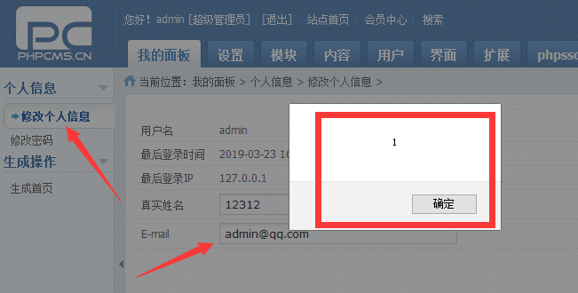

phpcms http://www.phpcms.cn  </br>

download:http://download.phpcms.cn/v9/9.6/ </br>

After landing in the administrator's background, modify the mailbox in personal information. <pre>POC:"><script>alert(1)</script></pre></br>


